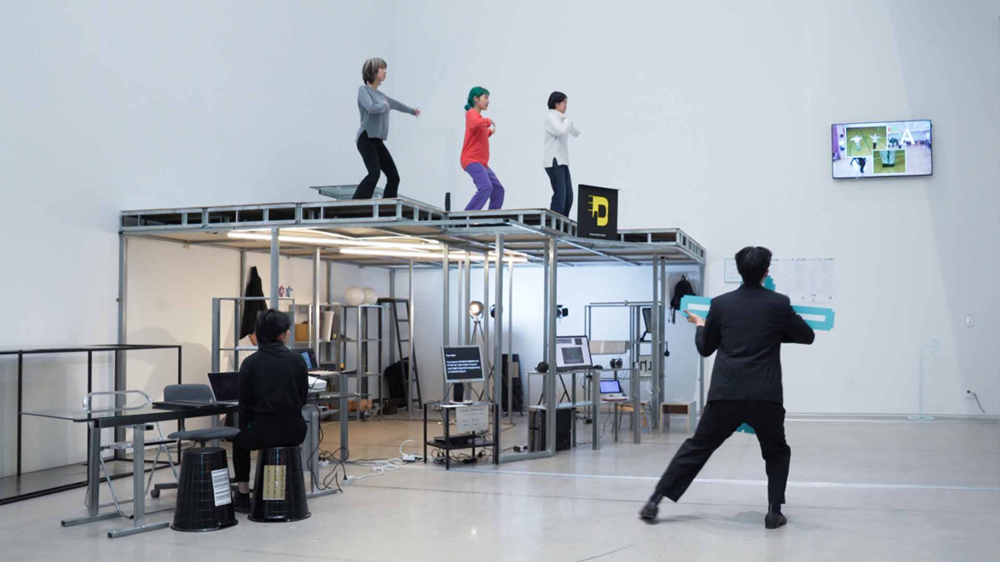
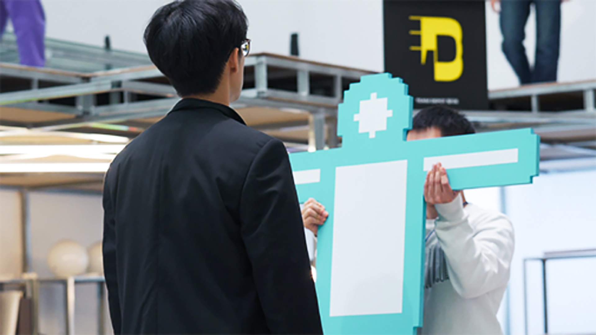
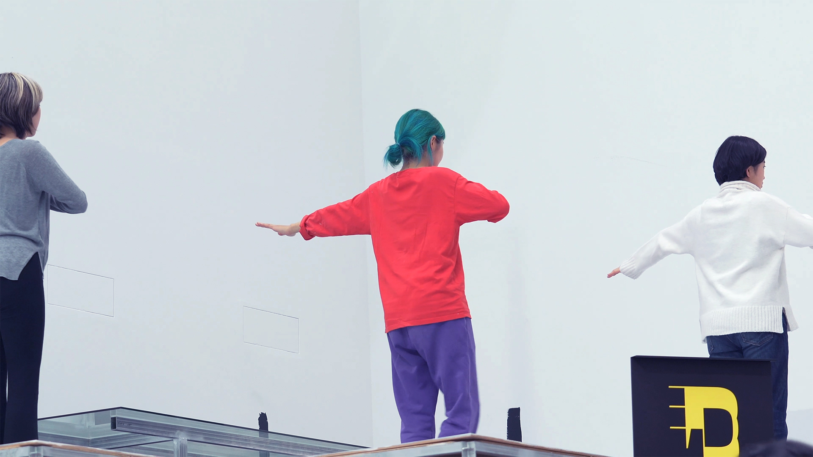
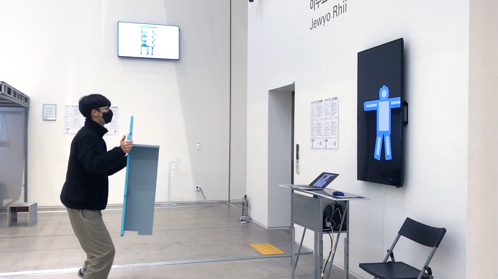

<!DOCTYPE html>
<html>
    <head>
        <meta charset="UTF-8">
        <title>All dance</title>
        <link rel="stylesheet" type="text/css" href="we 1.css">
        <link rel="stylesheet" href="jquery.bxslider.css">
        <script src="https://ajax.googleapis.com/ajax/libs/jquery/3.1.1/jquery.min.js"></script>
        <script src="jquery.bxslider.js"></script>
        <script>
          $(document).ready(function(){
            $('.slider').bxSlider();
          });

        
        </script>
    </html>
    <header>
    </header>

    <body>
      <div id="title">
          
      </div>
      <div class="slider">
        <div></div>  
        <div></div>
        <div></div>
        <div></div>
        <div></div>
        <div></div>  
         </div>
     
         
       
        
        
      <div id="info">
        <span>We all dance, Extended, 4K video, colour, sound, 22’ 32”, 2020<br><br>Director / Ji-ho Park
        <br>Camera / Jisu kim
        <br>
        Performer / Ji-ho park, Jisu kim, Yaerim Park
        Special Thanks to SeungAe Hong
        <br><br>
      </div>
      
      <div id="text">
        <span> <br/><br/>Artworks that have no place go were stored in the Exhibition hall of the Museum of Modern and Contemporary Art in Seoul, South Korea<br/>
          
          <br/>'Love Your Depot' is an art storage project created by Jewyo Rhii <br/><br/>These sculptural installations titled ‘We ALL’, by Artist Seung Ae Hong, were works that were left sitting in the hallway of the artist’s studio after the end of her solo show. These sculptures she calls her ‘babies’ were brought into Love Your Depot and after 5 months of storage, she requested for them to be thrown away. <br/><br/>Thinking about ways to discard works of art, I decided to gather our team to perform(dance) a final Goodbye Waltz for these sculptures. <br/><br/>The basic steps of the waltz were digitally created for us to practice the movements.<br/><br/>And on the last night of the exhibition, when all lights were turned off, these babies were brought out to the main hall, and together, we danced the last Goodbye Waltz.</span>
        </div><br><br>
   

      <div class="video">
        <div style="padding:45% 0 0 0;position:relative;"><iframe src="https://player.vimeo.com/video/746897775?h=ba4cf234d8&amp;badge=0&amp;autopause=0&amp;player_id=0&amp;app_id=58479" frameborder="0" allow="autoplay; fullscreen; picture-in-picture" allowfullscreen style="position:absolute;top:0;left:0;width:100%;height:100%;" title="We All Dance, Extended"></iframe></div><script src="https://player.vimeo.com/api/player.js"></script>
        </div> 
        
    </body>    